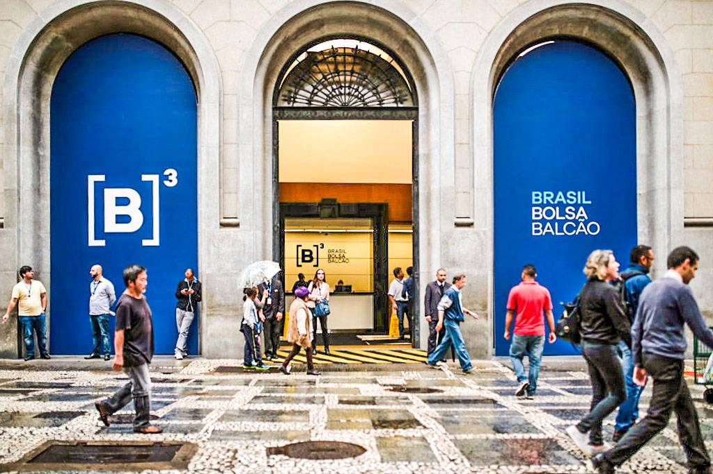
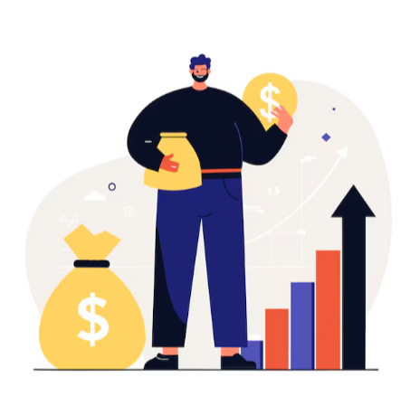
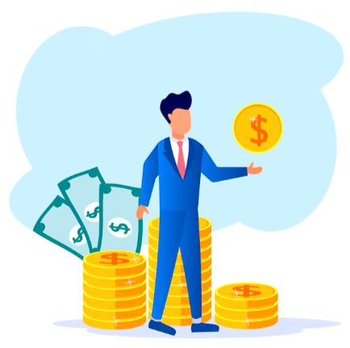
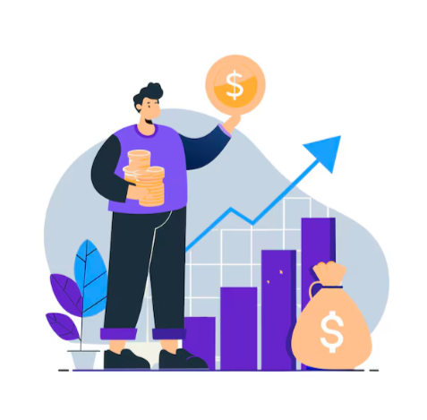
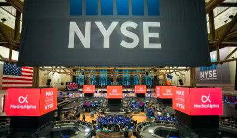
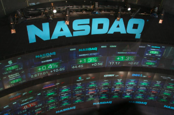
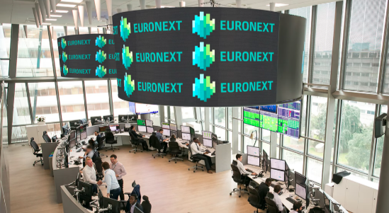

.png)
.png)
.png)
B3 | BOVESPA
Um guia descomplicado sobre a bolsa de valores: como funciona, quem pode investir, os principais produtos e os cuidados que você precisa ter.
Um guia descomplicado sobre a bolsa de valores: como funciona, quem pode investir, os principais produtos e os cuidados que você precisa ter.
Commodities são produtos básicos, de origem natural ou agrícola, que são comercializados em larga escala no mundo inteiro. Café, soja, petróleo, minério de ferro e carne são exemplos clássicos. O Brasil é um dos maiores produtores mundiais desses itens.
Na bolsa, você encontra essas gigantes representadas por grandes empresas:
Investir nesse tipo de ativo traz alguns benefícios interessantes:

A Comissão de Valores Mobiliários separa os investidores em três categorias.
Isso ajuda a saber quais
produtos você pode acessar e qual o nível de risco que pode assumir.
É qualquer pessoa que abre uma conta em corretora. Pode investir em ações, Tesouro Direto, fundos, ETFs e BDRs. É o perfil da grande maioria que entra na bolsa.

Tem patrimônio acima de R$ 1 milhão ou certificações como CFP. Consegue acessar produtos mais exclusivos, como fundos fechados e algumas operações especiais.

São bancos, fundos de investimento ou pessoas com mais de R$ 10 milhões. Têm acesso liberado a qualquer tipo de operação, incluindo as mais complexas.

Hoje já são mais de 5 milhões de CPFs ativos na B3.
Isso aconteceu graças aos aplicativos fáceis
de
usar e à educação financeira que virou febre nas redes sociais.
Muita gente usa a bolsa para complementar a renda com dividendos, juntar dinheiro para a aposentadoria ou realizar sonhos. Empresas que você conhece do dia a dia estão lá, o que aproxima ainda mais as pessoas do mercado.
O acesso facilitado mudou tudo. Hoje dá para começar a investir com poucos reais, direto pelo celular. O mercado deixou de ser coisa de especialista e virou uma ferramenta acessível para quem quer construir patrimônio.
Na B3 você consegue ter exposição a moedas como o dólar e o euro, mesmo investindo em reais. Isso é feito por meio de produtos que replicam o exterior.
Presente nos BDRs de empresas como Apple, Amazon e Microsoft, além do ETF IVVB11, que segue o S&P 500. Também existem contratos futuros de dólar e fundos cambiais.
Por meio de BDRs de empresas europeias e fundos internacionais, é possível acessar o euro, libra e outras divisas. Uma forma de diversificar sem complicação.
Quando o Ibovespa sobe, é sinal de que os investidores estão confiantes. Empresas conseguem captar dinheiro mais fácil, o consumo tende a crescer e até as aposentadorias ligadas à bolsa podem se beneficiar.
A queda reflete incerteza. Pode ser medo da economia, da política ou de crises externas. Nesses momentos, o custo do dinheiro para as empresas sobe e a confiança geral costuma cair.
Cerca de 50% do que é negociado na B3 vem de fora. Isso mostra como o mercado brasileiro está ligado
ao que acontece no mundo.
Esses investidores estrangeiros vêm das principais bolsas do mundo.
Veja
abaixo algumas delas:
Quando o S&P 500 sobe, o Ibovespa costuma acompanhar. E o contrário também acontece. Além disso, BDRs e ETFs permitem que você invista em empresas globais sem sair da B3.

NYSE
Nasdaq
EuronextVocê ganha de duas formas: quando o preço do ativo sobe (e você vende mais caro) e quando a empresa distribui parte do lucro (dividendos).
Reinvestir os dividendos e os rendimentos faz o dinheiro crescer como uma bola de neve. Quanto mais tempo você deixa, maior o efeito.
Você abre conta em uma corretora, transfere dinheiro e começa a comprar ativos pelo home broker. As negociações acontecem na B3 e levam dois dias úteis para liquidar (D+2). O segredo está na paciência e no hábito de reinvestir os ganhos. Tudo regulado pela CVM, com segurança e transparência.
Por trás da bolsa, existe um time de profissionais que ajuda o mercado a funcionar.
Conheça
algumas
carreiras e as médias salariais estimadas.
.png)
A B3 (Brasil Bolsa Balcão) é a bolsa de valores oficial do Brasil, resultado da fusão da BM&FBovespa. Todas as informações refletem dados gerais sobre o mercado financeiro e têm caráter educativo. Sempre consulte profissionais certificados antes de tomar decisões de investimento.
Fontes: B3 (Brasil Bolsa Balcão), Produtos de
commodities, BDRs de ETF e Produtos e Serviços - Ações e Renda Variável.
Comissão de Valores Mobiliários (CVM), Instrução CVM 539.
B3 - Bora Investir, Ativos de
proteção:
qual é
o papel na carteira – e como
acessá-los e Associação Nacional dos Analistas e Profissionais de Investimento (ANBIMA).